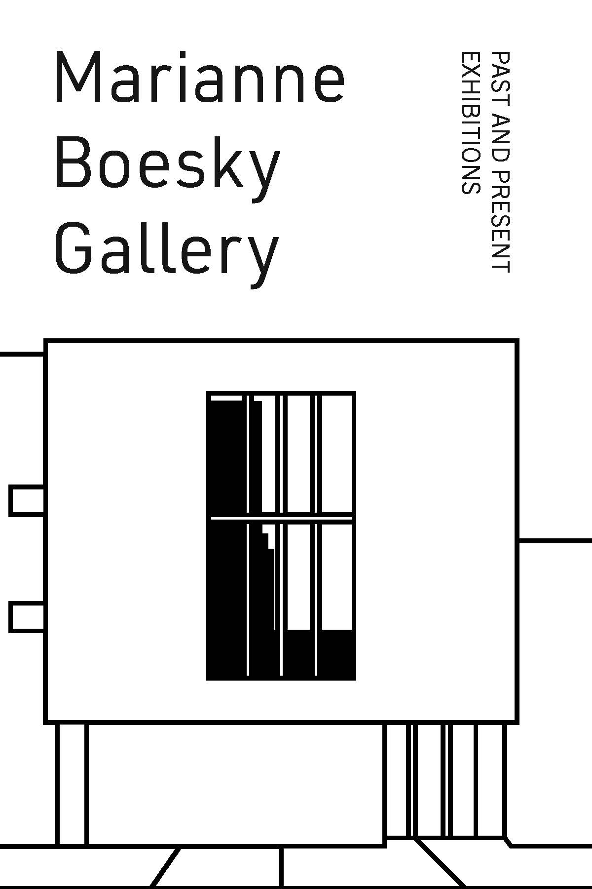
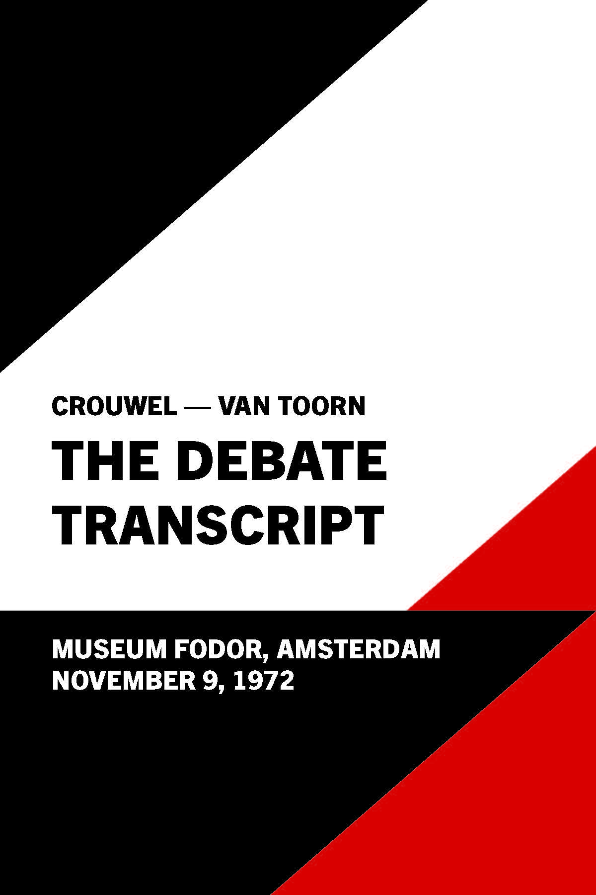
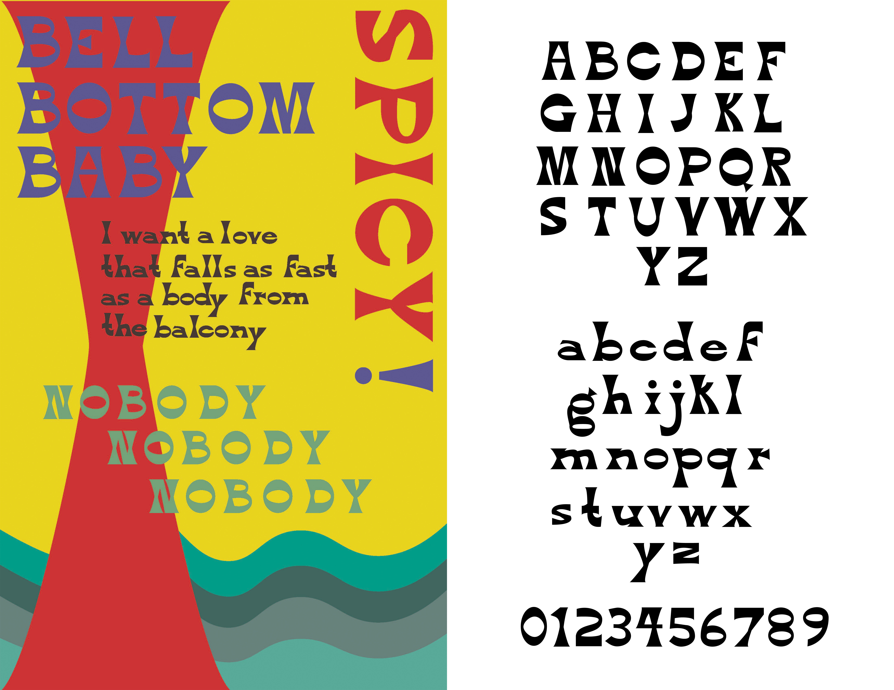
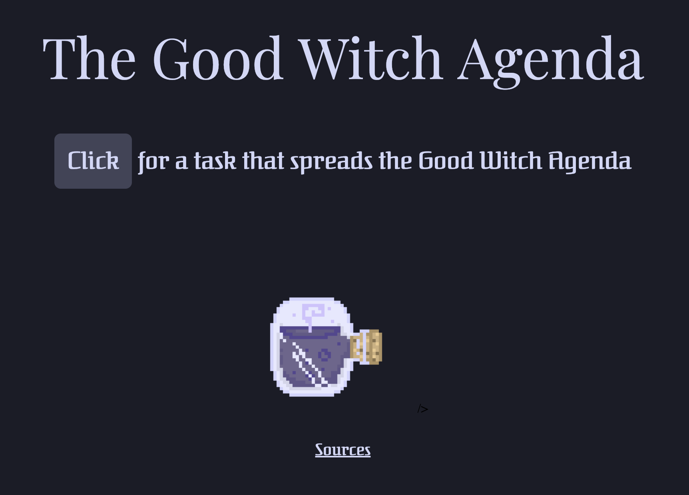

Indulgents Eats is a prominent food blog and Instagram based in Hong Kong and New York. I designed graphics for the blogger, Jen Balisi's, "Game of Thrones" themed wedding shower. I created these nametags pictured above as well as the emblem of the bride-to-be's dog, Crosby.
Marianne Boesky Gallery is an art gallery located in Chelsea. As part of my Core Studio Typography class, I typeset a guidebook for the gallery compiling its past and current exhibitions.

For my Core Lab Typography class, we were asked to typeset the style guidebook, "Elements of Style" by Oliver Strunk. As part of the assignment, we had to design the cover without using any typefaces.
In 1972, two distinguished graphic designers, Wim Crouwel and Jan Van Toorn, debated their design philosophies at the Museum Fodor in Amsterdam. Above is a transcipt I designed of what was exchanged at the debate.

The Equity Princicples is a zine I created for a class I took on Disability Culture. I did both the writings and simple illustrations for it. I chose to create a zine for its easy assembly and low cost to distribute.
Bell Bottom is a typeface I designed utilizing a chunky bell shape as the basis. It is reminiscent of the more organic typefaces of the 60s and 70s. Above is a type specimen poster I created utilizing the font.
The Good Witch Agenda is a task generator site I coded. It showcases tasks and tips I believe a "good" teenage witch would do in the 21st century. Check it out during the witching hours for a suprise.


This JUUL poster was created with the intention to showcase what the art nouveau style might look like in today's society. "Le Femme Nouvelle" and the smoking Culture of the time is displayed. The type featured is a font I designed in the period's style. The illustration is done with both traditional watercolor and digitally on Photoshop.